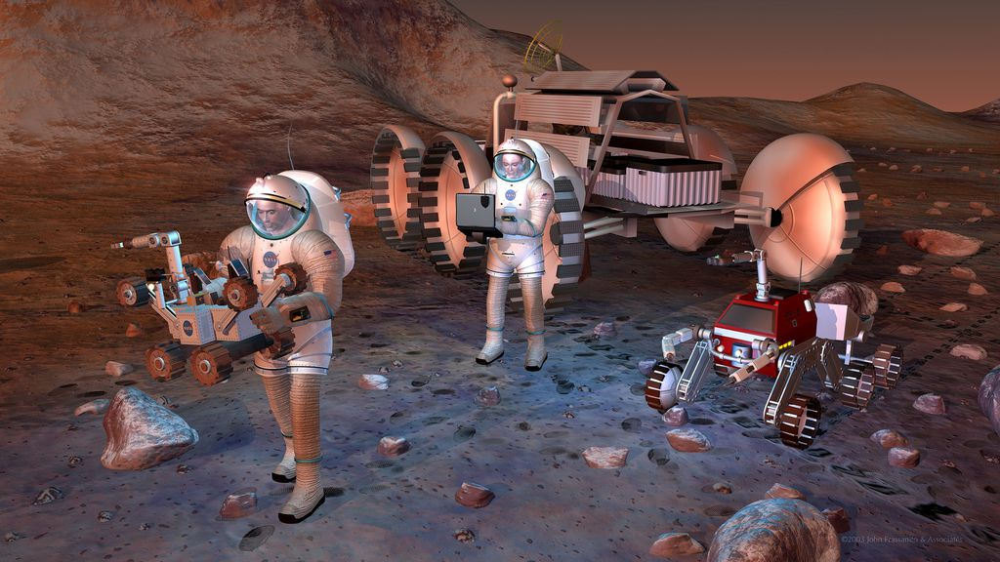

Sobre o Projeto Marte
O bilionário Elon Musk estabeleceu a meta de construir 100 naves espaciais por ano, que poderiam enviar cerca de 100 mil pessoas da Terra para Marte em todas as ocasiões em que as órbitas dos planetas se alinharem favoravelmente. Isso acontece a cada 2,135 anos (ou 780 dias).
Um usuário do Twitter analisou as informações e perguntou se os números chegariam a 1 milhão de humanos em Marte até 2050 — e Musk respondeu que sim, dizendo que, com a tecnologia atual, levaria-se cerca de 26 meses para realizar cada viagem. A ideia de Musk é carregar as naves enviá-las para a órbita da Terra a cada 30 dias, e então enviá-las para o destino somente no período mais adequado — o que significa que os passageiros ficariam um bom tempo no espaço próximo ao nosso planeta, antes de a viagem efetivamente começar.
"Muitos empregos em Marte"
E como o pessoal vai se virar quando chegar ao Planeta Vermelho? Bem, de acordo com Musk, haverá tarefas disponíveis na SpaceX, que estaria com muitas equipes realizando a terraformação do planeta — ainda que este assunto seja polêmico no meio científico, com estudos diversos mostrando que a terraformação de Marte não é possível com as tecnologias existentes no momento.
- Como está sendo o trabalho na SpaceX ?
Enquanto isso, a SpaceX tem muito trabalho a fazer para tornar essas ideias uma realidade. A empresa está atualmente trabalhando com naves projetadas para alcançar a órbita da Terra, após uma série de testes já realizados. Além disso, suas naves reutilizáveis têm vida útil de 20 a 30 anos, o que facilita viagens interplanetárias de ida e volta. Mas, ao que parece, ainda há algumas boas temporadas pela frente até que esse planos realmente possam ser concretizados — se é que serão da maneira que Elon Musk vislumbra.
Fonte: Canaltech